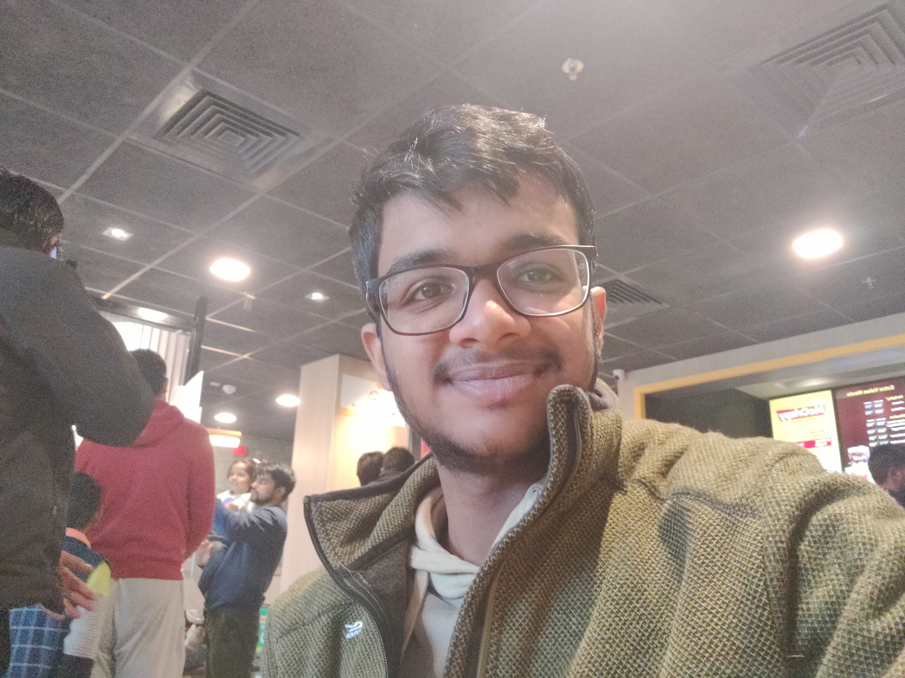
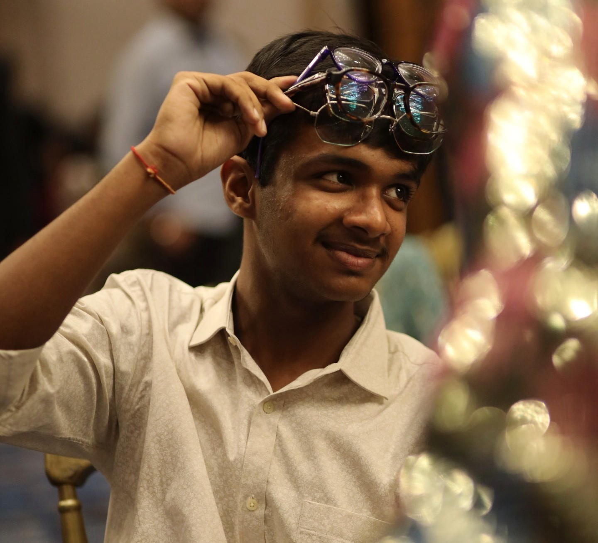
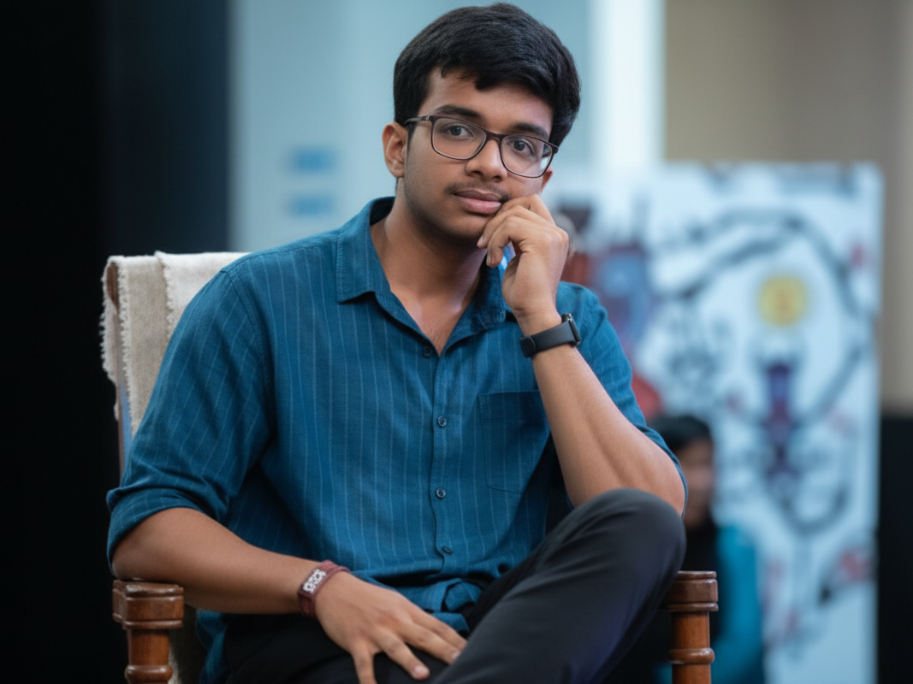
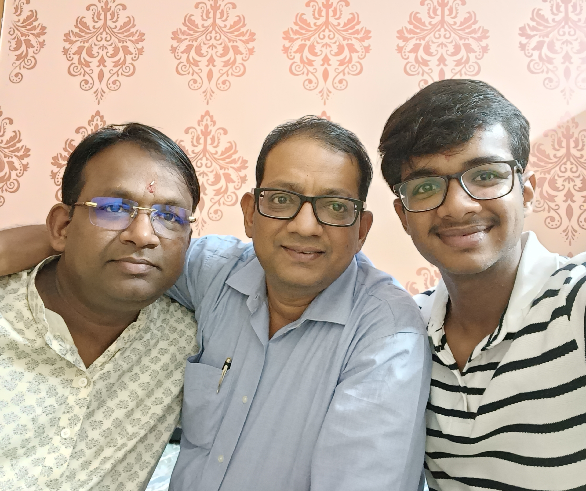
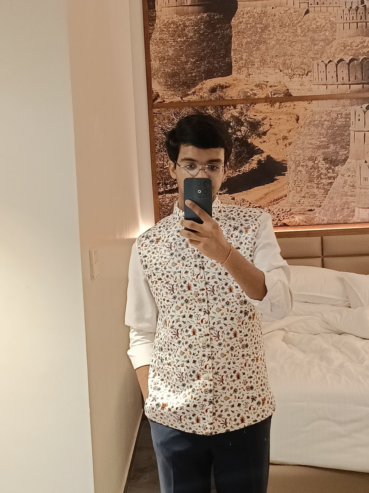
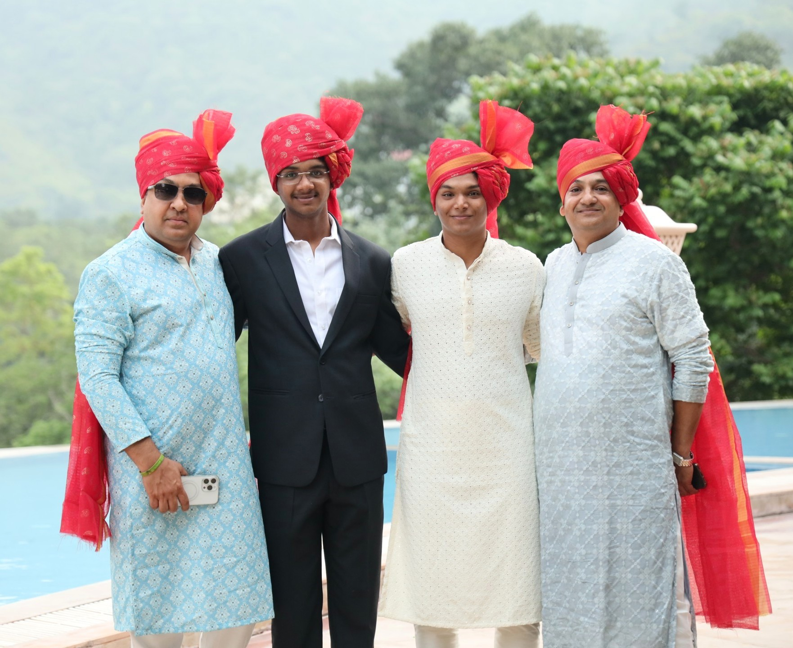

I am Khushaank Gupta, and I am a Student of CA. This is my personal homepage.
I enjoy learning about finance, trading, and capital markets. My journey as a CA student has allowed me to explore these areas in depth. Alongside academics, I am always curious about startups and innovations in the financial world, and I aspire to contribute to society with the knowledge and skills I gain.
Outside studies, I particularly enjoy listening to music, playing instruments, working out, spending time with friends and family, and exploring new experiences. I love playing sports, staying fit, and enjoy all kinds of music that inspire me to grow and relax.


In school, I was not the best student academically, but I was always curious. I discovered trading and finance early in my life, which gave me direction. I have faced challenges, but every step has taught me valuable lessons that continue to shape my journey today.

I started exploring the world of finance more seriously in my late teens. Over time, I began to understand the importance of discipline, patience, and continuous learning. With support from friends and mentors, I decided to pursue Chartered Accountancy to build a strong foundation for my future.

I have always believed in doing things differently, questioning conventional methods, and seeking simple and transparent solutions. This mindset helps me not only in my studies but also in the way I approach challenges in life.
However, my true growth started when I surrounded myself with like-minded people and mentors who inspired me to work harder. I continue to learn from every interaction and try to improve myself every day.

My journey is still just beginning. I aim to create a career where I can apply my knowledge of finance, contribute to building meaningful businesses, and inspire others who may be starting from scratch just like me.
I am also deeply interested in financial literacy and education. I believe sharing knowledge can empower others to make better decisions in life and markets, and I want to contribute to that space in the future.
Along this journey, I am grateful to my family, friends, and mentors who have supported me at every stage and encouraged me to stay true to my goals.

I am lucky to be surrounded by motivated peers and a positive environment that keeps me moving forward. I enjoy discussions, debates, and sharing ideas, which help me grow as a learner and an individual.
Today, I am focused on building strong knowledge and character as a CA student. I believe in slow and steady growth, backed by discipline, effort, and continuous improvement. With time, I hope to create value and make an impact in whichever field I choose to pursue.
For me, success is not just about titles or money, but about staying consistent, enjoying the journey, and creating something meaningful and sustainable. I believe growth comes from effort, patience, and a bit of luck too.
This website is a collection of my musings, the thoughts and insights I want to share, especially for those who are learning, building careers, or exploring the world of finance and self-growth.
Published on 31st Aug 2025.